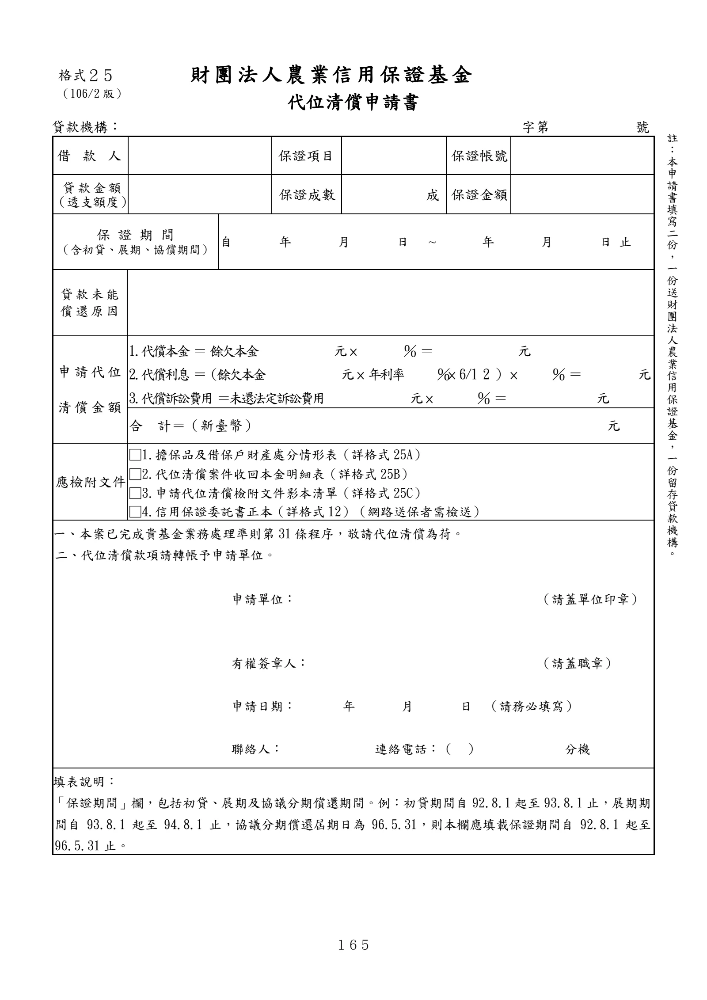

格式 25：代位清償申請書
正式書表版面請以原始PDF為準
下列擷取文字僅供搜尋與輔助查閱，未重新設計為線上表單。
手冊頁：165 PDF頁：177／203

查看PDF文字層
下列文字取自PDF既有文字層，僅供搜尋、複製與無障礙輔助。複雜表格的欄列位置可能失真，正式內容請以原頁預覽或PDF為準。
財團法人 農業信用保證基金 代位清償申請書 貸款機構： 字第 號 借款 人 保證項目 保證帳號 貸款金額 （透支額度） 保證成數 成 保證金額 保 證 期 間 （含初貸、展期、協償期間） 自 年 月 日 ~ 年 月 日 止 貸款未能 償還原因 申請代位 清償金額 1.代償本金 ＝ 餘欠本金 元 × ％ ＝ 元 2.代償利息 ＝（餘欠本金 元 × 年利率 ％× 6/1 2 ） × ％ ＝ 元 3.代償訴訟費用 ＝未還法定訴訟費用 元 × ％ ＝ 元 合 計＝（新臺幣） 元 應檢附文件 □1.擔保品及借保戶財產處分情形表（詳格式25A） □2.代位清償案件收回本金明細表（詳格式25B） □3.申請代位清償檢附文件影本清單（詳格式25C） □4.信用保證委託書正本（詳格式12）（網路送保者需檢送） 一、本案已完成貴基金業務處理準則第31條程序，敬請代位清償為荷。 二、代位清償款項請轉帳予申請單位。 申請單位： （請蓋單位印章） 有權簽章人： （請蓋職章） 申請日期： 年 月 日 （請務必填寫） 聯絡人： 連絡電話：（ ） 分機 填表說明： 「保證期間」欄，包括初貸、展期及協議分期償還期間。例：初貸期間自92.8.1起至93.8.1止，展期期 間自 93.8.1 起至 94.8.1 止，協議分期償還屆期日為 96.5.31，則本欄應填載保證期間自 92.8.1 起至 96.5.31止。 格式２５ （106/2 版） 註 ： 本 申 請 書 填 寫 二 份 ， 一 份 送 財 團 法 人 農 業 信 用 保 證 基 金 ， 一 份 留 存 貸 款 機 構 。